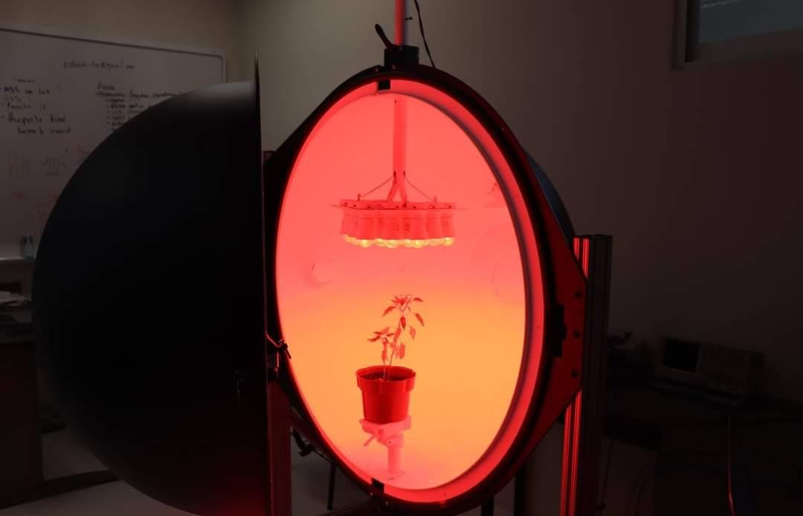
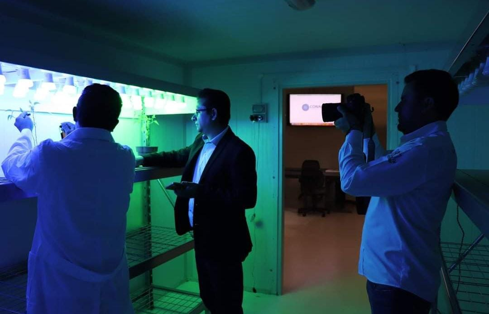
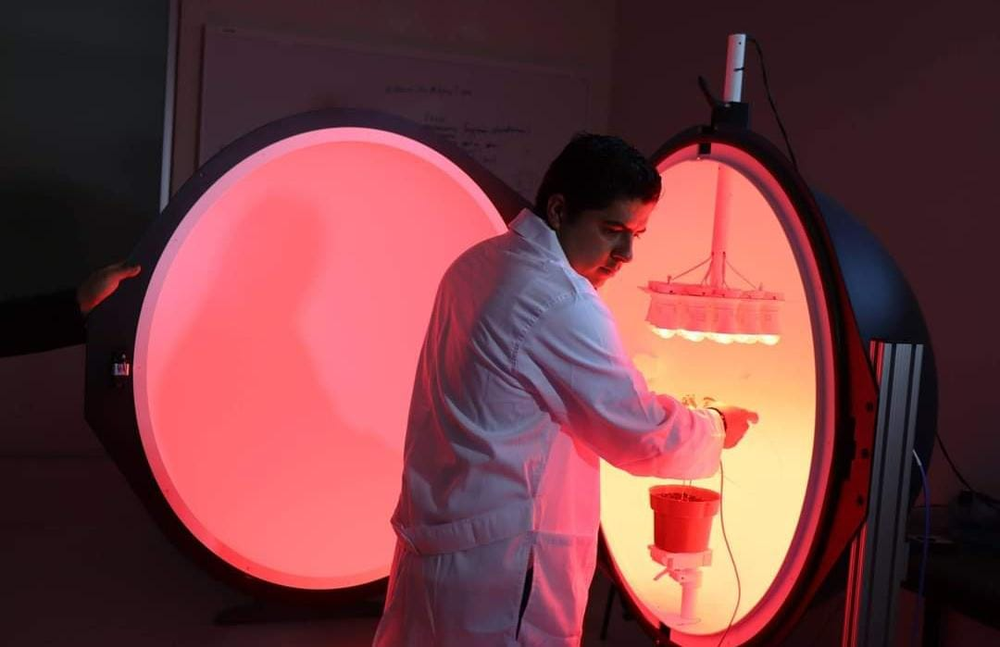
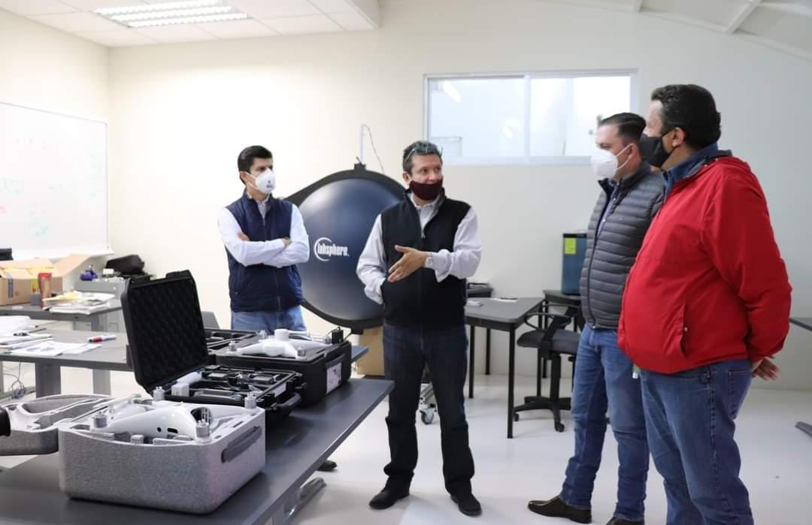

El Laboratorio de Iluminación Artificial se encarga de aportar conocimientos científicos y tecnológicos con responsabilidad social a través iniciativas sustentables que contribuyan al mejoramiento de las condiciones de vida en el sector agroindustrial; siendo uno de los pocos laboratorios en el mundo con equipamiento altamente especializado para analizar la interacción de la luz con las plantas y alimentos.
Objetivos
Profundizar y clarificar los fenómenos no explicados hasta el momento sobre los efectos de la luz (continua y pulsada) en plantas y alimentos como su caracterización biológica con herramientas tecnológicas actuales LEDs, siendo un centro capaz de poseer el nivel de competitividad que otros laboratorios existentes en el mundo.


Misión
Proyectar e impulsar el desarrollo de nuevas actividades en el sector agroindustrial a través de procedimientos que ayuden a mejorar la calidad de vida alrededor del mundo, generando productos agroalimentarios con valor agregado.
Visión
Ser un centro capaz de impulsar, desarrollar y fortalecer iniciativas que incentiven la productividad y rentabilidad agroalimentaria; generando en el sector agroindustrial nuevas filosofías de competitividad y calidad.


Laboratorio alineado a sectores estratégicos de:
- PND 2019-2024 (Autosuficiencia alimentaria, Ciencia y Tecnología).
- PED 2016-2022 del Estado de Aguascalientes (Agroalimentaria, Electrónica y TIC`s).
- La agenda de Innovación para el Estado de Aguascalientes (Conacyt).
- Agenda 2030 de la ONU (objetivos 2, 11 y 12).
¿Cómo se construyó LIA?
La adquisición de equipamiento en LIA se ha ido consolidando a través de diferentes apoyos federales y estatales tal es el caso de la Convocatoria de Infraestructura Científica y Tecnológica del CONACyT, la Convocatoria de Investigación Científica Básica 2016 que tuvo como objetivo apoyar únicamente propuestas de investigación científica básica que generen conocimiento de frontera y contribuyan a mejorar la calidad de la educación superior y a la formación de científicos y académicos.